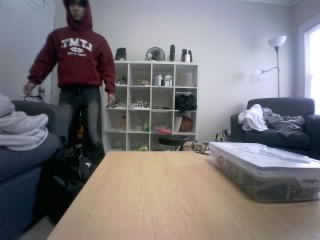
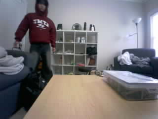
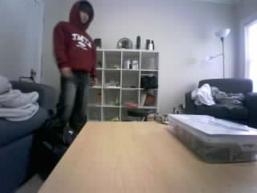

Frame 50: CONFIRMING | 11.250% changed area
Original JPEG · MeasurementsOriginal photos are unchanged. Boxes show the largest changed region against the learned empty scene. Area cutoff is recorded with each photo; confirmation: 3 frames. This is not deer recognition.

Frame 50: CONFIRMING | 11.250% changed area
Original JPEG · Measurements
Frame 51: CONFIRMING | 11.208% changed area
Original JPEG · Measurements
Frame 52: LARGE_CHANGE | 8.417% changed area
Original JPEG · Measurements